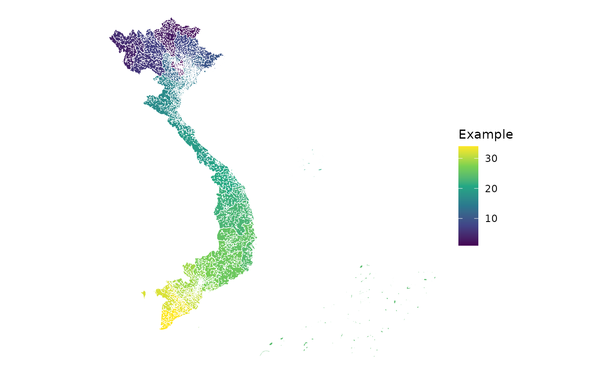

Creates a ggplot2 outline map or choropleth from the bundled provincial
boundaries. Statistical values are joined using names, aliases, official
codes, or historical codes appropriate to the selected geography.
Usage
plot_vnmap(
geography = c("provinces", "provinces_63"),
data = NULL,
values = NULL,
id = "code",
include = NULL,
region = NULL,
labels = FALSE,
insets = FALSE,
...
)Arguments
- geography
Either
"provinces"for the current 34-unit geography or"provinces_63"for the historical 63-unit geography.- data
Optional data frame containing one row per administrative unit.
- values
Character scalar naming the column in
datamapped to the polygon fill aesthetic. Required whendatais supplied.- id
Character scalar naming the column in
datacontaining province or municipality names, aliases, two-digit codes, or ISO codes.- include
Optional character vector of unit names or codes to display.
- region
Optional character vector of socio-economic region codes (
"RRD","NMM","NCC","CH","SE","MRD") or English region names. Units matching eitherincludeorregionare displayed.- labels
Logical; if
TRUE, add Vietnamese names at points guaranteed to lie inside each geometry.- insets
Controls enlarged inset panels for small units that are hard to see at national scale.
FALSE(default) draws none;TRUEenlarges the centrally governed municipalities; a character vector of names or codes enlarges those specific units. This feature is experimental.- ...
Passed to
ggplot2::geom_sf().
Details
When data is supplied, units without a matching row receive
NA as the fill value and are handled by the chosen fill scale. Duplicate
identifiers in data are rejected because a polygon can have only one
fill value. Unit identifiers are normalized by province_code().
Arguments such as color, linewidth, and alpha are passed through to
ggplot2::geom_sf(). Labels use name_vi and may overlap on dense maps;
check_overlap = TRUE suppresses some overlapping labels.
Insets are drawn as scaled copies placed in the right margin of the map and reuse the same fill mapping and styling as the main layer.
Examples
plot_vnmap(color = "white", linewidth = 0.2)
values <- transform(province_info(), value = seq_len(34))
plot_vnmap(
data = values,
values = "value",
id = "code",
color = "white",
linewidth = 0.2
) + ggplot2::scale_fill_viridis_c(name = "Example")

plot_vnmap(region = "MRD", labels = TRUE)
#> Warning: Ignoring unknown parameters: `geom` and `check_overlap`
#> Warning: Ignoring unknown aesthetics: label
plot_vnmap(
geography = "provinces_63",
include = c("Ha Noi", "Hai Phong", "Quang Ninh"),
labels = TRUE
)
#> Warning: Ignoring unknown parameters: `geom` and `check_overlap`
#> Warning: Ignoring unknown aesthetics: label